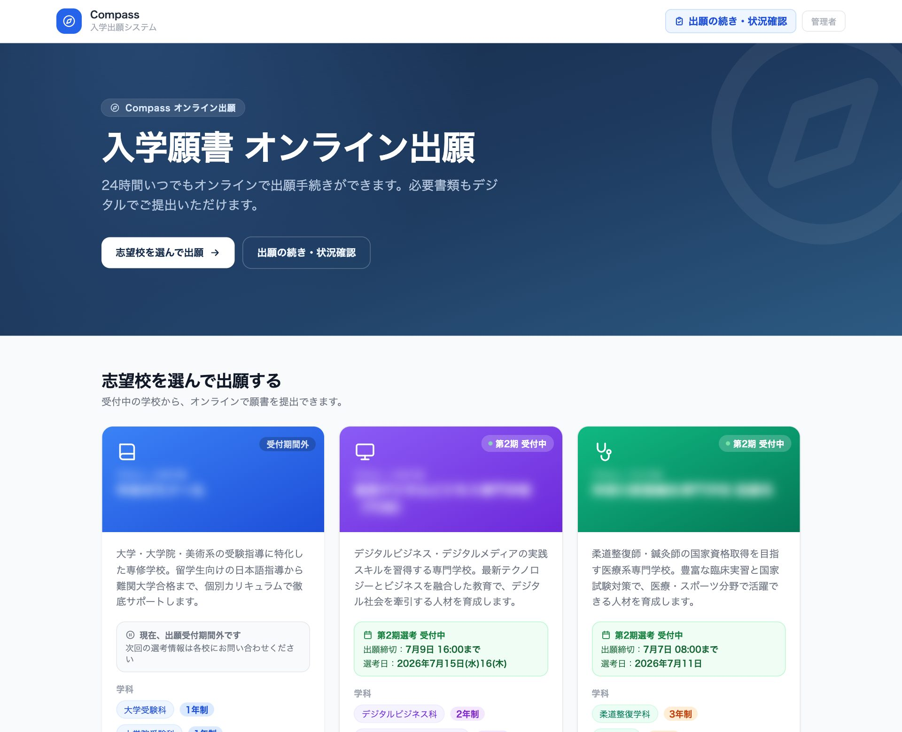

その運営、特定の
「人」に依存していませんか。
多くの教育機関では、募集・出願・学生対応・人事といった重要業務が、紙やExcel、担当者の経験に頼って回っています。引き継ぎが難しく、ミスや残業の温床になりやすい領域です。
教育機関の運営を、
仕組みで支える6つの領域。
教育現場で実際に使われることを前提に、システムの開発・導入から運用の定着、業務改善のコンサルティングまで一貫して支援します。
学校向けCRM
見込み学生から在校生・卒業生までの情報を一元管理。問い合わせ対応や追客の状況を可視化します。
学生管理システム
在籍・成績・出欠・連絡履歴などの学生情報を整理。担当者が変わっても継続できる運営基盤をつくります。
募集管理システム
学生募集から出願・入学手続きまでの流れをシステム化。対応漏れを防ぎ、歩留まりの改善につなげます。
人事・労務管理
講師・職員のシフト、勤怠、契約情報などを整理し、教育機関特有の労務まわりを仕組み化します。
AIエージェント導入
問い合わせ一次対応、書類チェック、リマインドなどの定型業務をAIで自動化し、現場の負担を減らします。
DXコンサルティング
現状の業務を棚卸しし、何をシステム化し何を残すかを設計。導入後の定着と経営改善まで伴走します。
教育の枠を超えて、
AIを実装する力。
Compassの開発で培ったAIエンジニアリングを、業務自動化からローカルAIの構築まで、現場の課題に合わせた形で提供します。
業務自動化
定型的な事務作業やワークフローを自動化し、人手とミスを削減。問い合わせ対応、書類処理、リマインドなどを仕組み化します。
RAG（検索拡張生成）
社内のマニュアルや過去資料をAIが参照し、根拠にもとづいて回答。属人化したナレッジを、誰でも引き出せる形にします。
LLMチューニング
用途や現場の言葉づかいに合わせてLLMを調整。プロンプト設計からチューニングまで、精度と使い勝手を最適化します。
ローカルAI構築（オンプレミス）
機密データを外部に出さず、自社環境でAIを構築・運用。セキュリティと情報管理を重視する現場に適した形を設計します。
つくる側も、現場を知っている。
株式会社XYは、教育機関を実際に経営してきた立場から生まれた会社です。机上のITではなく、現場で回る仕組みを提供します。
教育機関の経営者がつくる、現場で回るシステム
代表自身が日本語学校・専門学校などの運営に携わってきました。だからこそ、現場が本当に困っている工程を理解し、使われずに終わらないツールを設計できます。
- 現場の業務フローを前提とした設計
- 導入して終わりではなく、定着まで支援
募集から運営まで、つながる仕組みを一気通貫で
募集・出願・学生管理・人事を別々のツールで管理すると、情報が分断されます。XYは各領域を連携させ、教育機関全体の運営を一つの流れとして整えます。
- 領域をまたいだデータ連携
- 規模や運営方針に合わせた段階的な導入
AIを「使える業務」に落とし込む
話題のAIを導入することが目的ではありません。問い合わせ対応や書類確認など、教育機関で実際に負担となっている業務に絞り、効果が出る形で組み込みます。
- 業務に直結したAI活用の設計
- 人とAIの役割分担を明確化
OPC ― 余計な人を介さない、直接の関係
XYは「OPC（One Person Company）」という考え方を大切にしています。意思決定者であり開発者でもある代表が、お客様と直接向き合う体制です。営業・窓口・開発が分かれた組織では、伝言や調整に時間がかかり、要望が現場まで届きにくくなります。決める人・つくる人と直接話せるからこそ、判断が速く、ご要望がそのまま形になります。
- 営業や中間担当を介さず、決定権を持つ相手と直接
- 伝言ゲームがなく、判断とレスポンスが速い
学校法人の運営を、
ひとつの基盤に。
株式会社XYは、教育機関の運営を支えるプロダクトを自社で開発・提供しています。出願という入口から、学校運営全体をつなぐ基盤づくりを進めています。
chinichi-OS
学校法人の運営全体を、ひとつの基盤で。出願を起点に、学生管理・人事・在籍・会計までをつなぎ、人とAIが協働する教育インフラを目指す統合プラットフォームです。
Compass
chinichi-OSの出願モジュール。留学生と日本人、複数校・複数学科の出願を一つの仕組みで管理し、AIが書類確認や連絡業務を支援します。
なぜ、教育に「テクノロジー」なのか。
教育は「人」で成り立つ仕事です。だからこそ、人にしかできないことに集中できる環境を、テクノロジーでつくりたい。
募集も、出願も、在籍管理も ― 教育現場の多くの時間が、紙やExcel、繰り返しの事務作業に奪われています。私たちは教育機関を運営してきた当事者として、その「もったいなさ」を肌で知っています。だから、外から提案するだけでは終わらせない。自分たちで現場の仕組みをつくり、回るまで伴走する。先生やスタッフが生徒に向き合える時間を取り戻すこと ― それが、私たちが株式会社XYをつくった理由です。

教育の現場で感じた課題を、解決するために。
中国出身。慶應義塾大学を卒業後、東京大学大学院修士課程を修了。2012年より日本留学支援事業に従事し、学部・大学院進学指導や日本語教育事業の立ち上げ・運営に携わってきました。
株式会社リクルートにて法人営業およびWebマーケティングを経験した後、事業企画・新規事業開発の領域へ。その後、教育機関の経営に参画し、日本語学校・専門学校など複数の教育事業の運営を担当してきました。
現在は、年間4,000名を超える留学生を受け入れる教育グループの経営に携わるとともに、学校法人理事長および複数の教育関連企業の代表を務めています。長年の経験のなかで、教育機関が抱える煩雑な業務や属人的な運営の課題を肌で感じ、その解決を目的として株式会社XYを設立しました。
近年は、AIとモダンな技術スタックを活用したプロダクト開発を自ら主導しています。学生出願・管理システム「Compass」をはじめとする教育機関向けシステムを「少人数 × AI支援開発」で内製。業務の自動化、RAG（検索拡張生成）による社内ナレッジ活用、LLMのチューニング、ローカルAI（オンプレミス環境）の構築・導入まで手がけ、AIエージェントの実装と現場での活用を推進しています。技術と経営の両面から、「教育 × テクノロジー」を形にしています。
学生出願・管理システム
「Compass」、導入が進んでいます。
当社が開発・提供する学生出願・管理システム「Compass」を、学校法人羽場学園・平井学園・SGG外語学院などの教育機関にご導入いただいています。ある導入校では、約440名規模の出願・事務処理を、従来の6〜8名から1〜2名で対応できる体制になりました。

教育機関のインフラを、
ゼロからつくる。
出願という入口から始め、学生管理・人事・在籍・会計までを一つの基盤につなぐ「学校法人OS」を開発しています。現場の声を取り込みながら、人とAIが協働する教育インフラを一歩ずつ形に。教育機関の生産性向上と持続的な成長を、ソフトウェアで支えます。
Human × AI × Global教育機関のDX、何から始めるか
ご相談ください。
現状のヒアリングから、無理のない導入プランをご提案します。まずはお気軽にお問い合わせください。